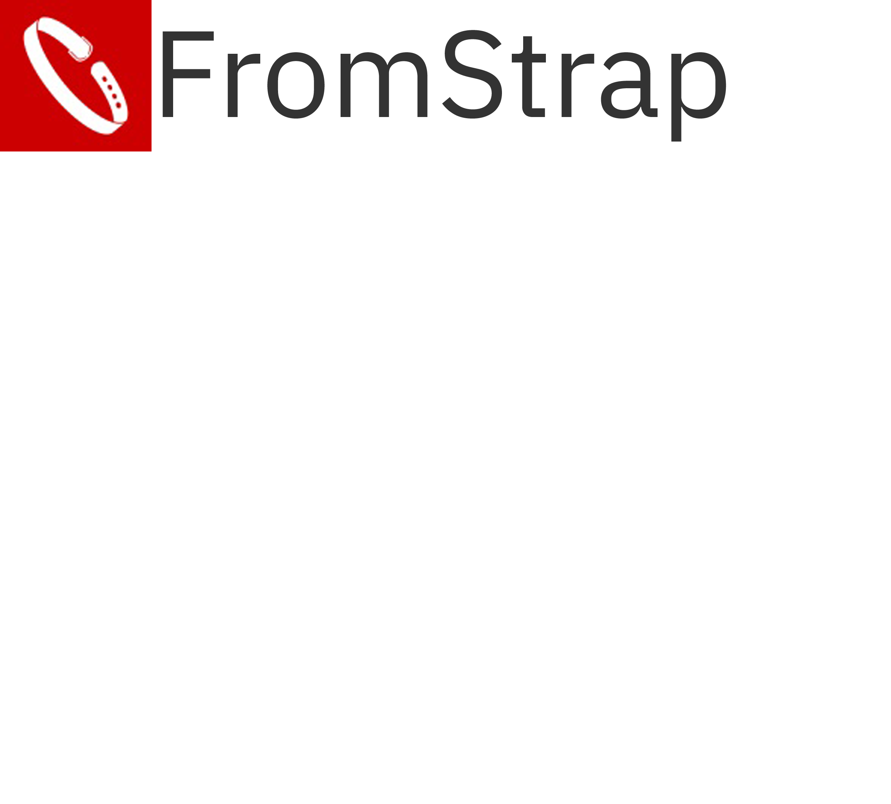

Victor Martins
-

- 
Victor Martins
Fui inserido no ramo da cobrança como aprendiz de Control Desk no ano de 2015, onde permaneci durante 15 meses, que foram de suma importância para meu crescimento profissional, após esse período investi como freelancer no Back-end e Tester para software, porém dentre estudos, acabei migrando para o Front-end, onde continuo até o presente momento.
Posteriormente iniciei na CenterCredit CCR como Analista de Control Desk Junior, me desenvolvendo até Analista Pleno. Meu ciclo junto a CCR foi encerrado no mês de novembro de 2018 .No segundo semestre de 2019, minha carreira foi continuada junto a Flex Relacionamentos Inteligentes, onde estive Assistente de Analista de Control Desk, Posteriormente cresci para a posição de Analista de Control Desk Jr, no meio dessa jornada, foi onde conheci, me aprofundei e me apaixonei por Banco de Dados Relacionais, meu ciclo junto a Flex se encerrou no segundo semestre de 2020
Então fui convidado a me juntar às atividades da Startup Uffa!, lá estive Analista de sistemas Jr, onde me fortifiquei na area de banco de dados, assim desenvolvendo layout para arquivos de importação/exportação de cargas de dados, desenvolvendo e implementando métodos e tecnologias para a modelagem do banco de dados. Minha passagem pela Uffa! Foi breve, mas de extrema importância para meu conhecimento e experiência profissional.
No final do segundo semestre de 2019, junto a três amigos, demos início a um novo momento em nossas vidas, nós fundamos a FromStrap.
FromStrap
A FromStrap é um projeto que se entrelaça ao mercado tecnológico, para criar soluções inteligentes para plataforma Mobile e Web, atualmente estamos em nossa fase de desenvolvimento, criando algumas soluções com as melhores tecnologias do mercado.
FAQ
- Qual o serviço prestado por vocês?
- A FromStrap fornece serviços completos direcionado para Web, tais como:
Aplicações Web
Lidamos com a criação e manutenção de aplicações Web, sendo elas de gerência ou de uso geral.Aplicações Mobile
Também lidamos com tecnologia Mobile nativa, criando aplicações para Android e iOS.Páginas Responsivas
Criamos páginas responsivas que se adaptam em qualquer tipo de tela.SEO
Aprimoramos sua página para melhor posicionamento dos motores de pesquisas da Internet. - Caso eu precise de um aplicativo fora da Web, vocês fornecem?
- Apesar de não ser nosso foco principal, nós fornecemos aplicações fora da Web, também, é necessário que seja solicitado um orçamento para verificarmos o que será necessário.
- Preciso de suporte para banco de dados, vocês fornecem?
- Fornecemos suporte e modelagem para banco de dados.
- Já tenho um site, mas queria modificá-lo ou preciso de suporte.
- Estamos aqui para o que for preciso! basta nos contactar, e veremos o melhor meio de lhe ajudar, sempre!
Contato
- victormartins.vc@gmail.com
- +55 (11) 97777-7672